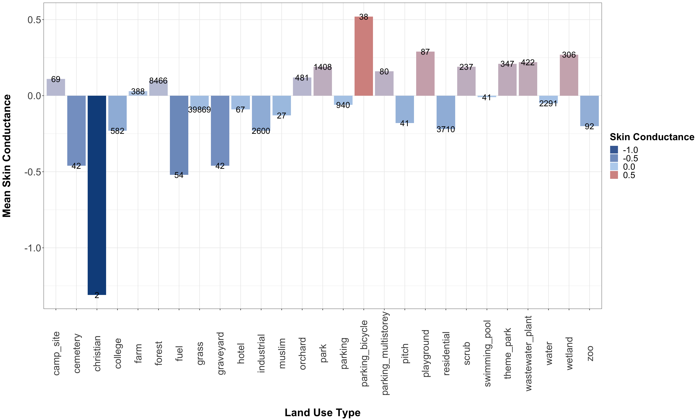
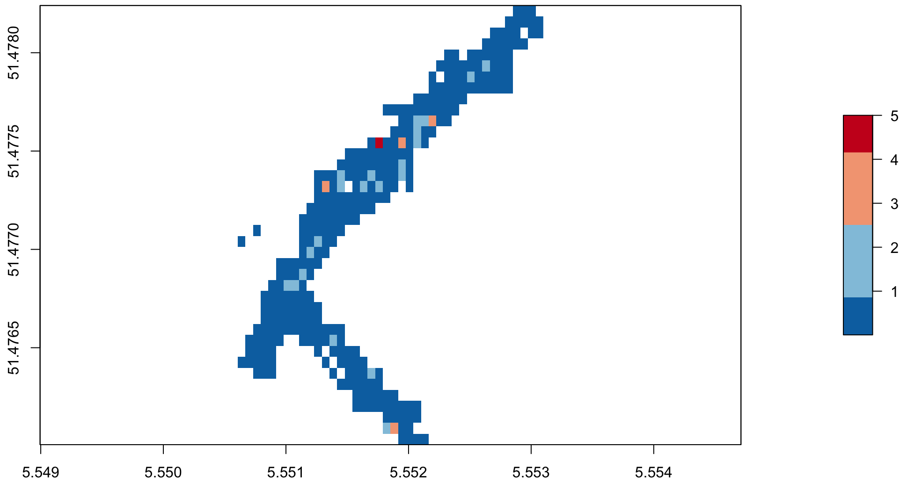
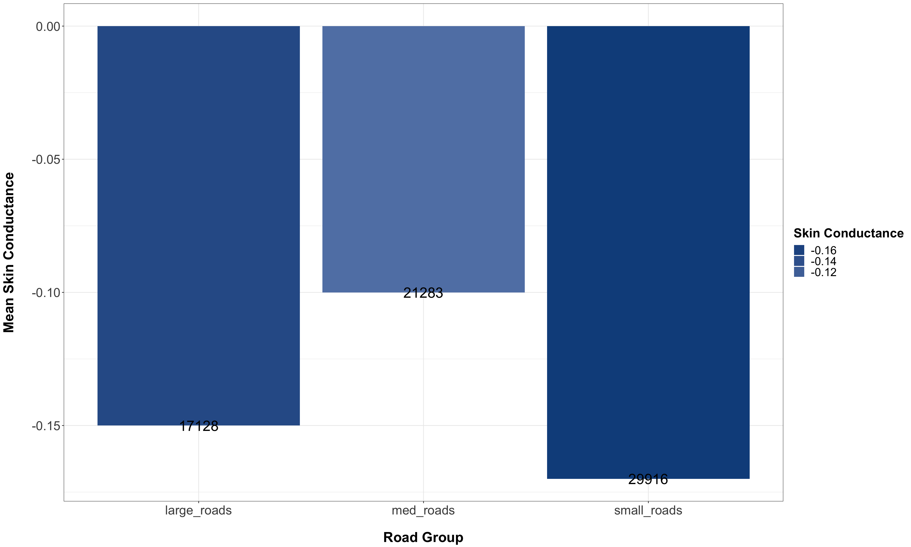

Mapping the Emotional Dimension:

Measuring Human Behavior Across Space & Time
to Inform Tourism & Leisure Management
Garrett C. Millar

My Netherlands Experience
My Netherlands Experience

Emotions
- Why do emotions matter?
- Measuring emotion
- Mapping emotional experiences
Methodology
Study Area — Netherlands

Methodology
Framework for Cyclists' Emotional Experiences

Methodology
Buffers as an Environment Interaction Metric

Methodology
Mapping Emotion

Methodology
Mapping Emotion cont'd

Results
Descriptive Statistics: Road Types
Results
Descriptive Statistics: Land Use by Type
Results
Descriptive Statistics: Land Use by Group
Results
Regressions: Ordinary Least Squares & Spatial Autoregressive Modeling
| OLS Model | Spatial Lag Model | Spatial Error Model | ||||
|---|---|---|---|---|---|---|
| Coefficients | SE | Coefficients | SE | Coefficients | SE | |
| Altitude | 0.031 | 0.001 | 0.01 | 0.00 | 0.028 | 0.001 |
| Speed | 0.009 | 0.01 | 0.001 | 0.002 | 0.001 | 0.014 |
| Urban Areas | 0.008 | 0.002 | -0.169 | 0.001 | -0.428 | 0.002 |
| Green Areas | 0.081 | 0.019 | 0.008 | 0.016 | 0.004 | 0.024 |
| Water | -0.48 | 0.012 | 0.032 | 0.01 | 0.023 | 0.025 |
Interactive Application Development
Web Mapping
Outdoors: Methodology
Spatial Gridding & Averaging
Outdoors: Methodology
Spatial Gridding & Averaging
| Road Map | ||
 |
Outdoors: Methodology
Spatial Gridding & Averaging
| Road Map | Satellite | |
|
 |
Outdoors: Methodology
Spatial Gridding & Averaging
| Road Map | Satellite | Topographical |
|
|
 |
Spatial Gridding & Averaging
Indoors: Methodology
Beacon Location Processing
| Generate Beacon Coordinates | ||
Indoors: Methodology
Beacon Location Processing
| Generate Beacon Coordinates | Generate Buffers | |
Indoors: Methodology
Beacon Location Processing
| Generate Beacon Coordinates | Generate Buffers | Crop Buffers by Floor Plans |
Indoors: Methodology
Indoor Beacon Heatmap: Ground Floor
Indoors: Methodology
Indoor Beacon Heatmap: First Floor

Indoors: Methodology
First Floor Exhibits

Interactive Application Development
Wrapping Up
- What have we learned?
- Mapping emotions
- Complexity of spatially analyzing and visualizing emotional data
- Whats next? Where do we go from here?
Next Steps?
Questions?
Thank you!
Extra Slides
Cycling: Methodology
GPS Data

Cycling: Methodology
Skin Conductance
Cycling: Results
Descriptive Statistics: Road Groups
Nuenen Outdoors: Methodology
GPS Data